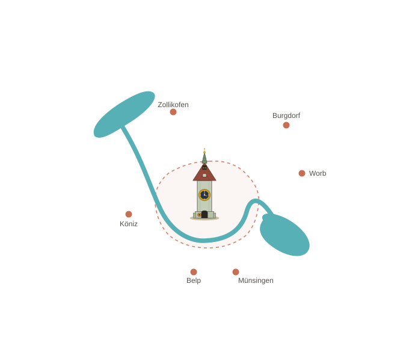

Einzugsgebiet

Termine vor Ort
Die Begleitung findet bei Ihnen zu Hause, an einem Ort Ihrer Wahl oder nach Absprache statt. Liegt Ihr Wohnort ausserhalb des Gebiets? Sprechen Sie mich gerne an – wir finden eine Lösung.

Die Begleitung findet bei Ihnen zu Hause, an einem Ort Ihrer Wahl oder nach Absprache statt. Liegt Ihr Wohnort ausserhalb des Gebiets? Sprechen Sie mich gerne an – wir finden eine Lösung.